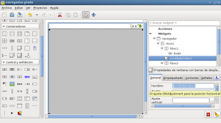
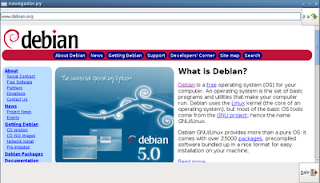

Crear un Navegador web básico con python+gtk+webkit
Posted on mar 04 enero 2011 in Tutorial Python • 2 min read
Volviendo a la programación con python, glade y gtk; ahora explicare como hacer un navegador sencillo usando webkit en python.
Este post se basa en el artículo del Blog de Marcelo, la diferencia es que el programo sin glade la interfaz gráfica.
En la siguiente figura se muestra la interfaz gráfica de la aplicación.

La aplicación simplemente tiene una entrada de texto para el URL donde se le puede dar enter para cargar la página o al botón de "ir"; la página se cargará en el frame con barras deslizantes en el centro de la interfaz y se tiene un botón para salir del navegador. Por defecto se carga una página al iniciar la aplicación.
El código de la aplicación se muestra a continuación:
#!/usr/bin/env python
# -*- coding: utf-8 -*-
#Importar los módulos gtl y webkit
import gtk
import webkit
#La clase App hereda threading.Thread
class App:
def __init__(self):
#Método constructor, asociando los widgets
#Asociar el archivo glade al objeto Builder.
self.glade_file = "navegador.glade"
self.glade = gtk.Builder()
self.glade.add_from_file(self.glade_file)
#Asociando la ventana del navegador
self.ventana = self.glade.get_object('navegador')
#Asociando el boton salir
self.bsalir = self.glade.get_object('bsalir')
#Asociando el boton navegar
self.navegar = self.glade.get_object('navegar')
#Asociando la entrada de texto del url a navegar
self.enlace = self.glade.get_object('url')
#Asociando la ventana con las barras deslizantes
self.scrolledwindow1 = self.glade.get_object('scrolledwindow1')
#Conectores
#Conectar de destruir la ventana principal
self.ventana.connect("destroy",self.on_navegador_destroy)
#Conectar del boton salir
self.bsalir.connect('clicked', self.on_bsalir_clicked)
#Conector del boton navegar
self.navegar.connect('clicked',self.on_navegar_clicked)
#Conector de dar enter a la entrada de texto
self.enlace.connect('activate',self.on_url_activate)
#Asociando página por defecto.
#Instanciando la clase webview
self.webview = webkit.WebView()
#Agregando webview a la ventana con barras deslizantes
self.scrolledwindow1.add(self.webview)
#Abriendo una página por defecto
self.__navegacion("http://www.debian.org")
#Se muestra la ventana principal del programa
self.ventana.show_all()
#Si se da enter a la entrada de texto se captura el url y se navega
def on_url_activate(self,*args):
url = "http://" + self.enlace.get_text()
self.__navegacion(url)
#Se abre el url con webview
def __navegacion(self,url):
self.webview.open(url)
def on_navegador_destroy(self,*args):
#Se cierra la aplicación
gtk.main_quit()
def on_bsalir_clicked(self,*args):
#Se cierra la aplicación al darle clip al boton salir.
gtk.main_quit()
def on_navegar_clicked(self,*args):
#Se navega el url al darle clip al boton
url = "http://" + self.enlace.get_text()
self.__navegacion(url)
def main(self):
#Inicia la aplicación
gtk.main()
if __name__ == '__main__':
app = App()
app.main()
En la siguiente figura se muestra el navegador en funcionamiento.

===
¡Haz tu donativo! Si te gustó el artículo puedes realizar un donativo con Bitcoin (BTC) usando la billetera digital de tu preferencia a la siguiente dirección: 17MtNybhdkA9GV3UNS6BTwPcuhjXoPrSzV
O Escaneando el código QR desde billetera: